나만의 AI 만들기
디지털윤리체험관 어린이 AI 윤리 체험 게임 UX/UI 디자인
Game UX/UI
Illustrator
Spline
Midjourney
Copilot
Scenario
Interaction
3D Character
AI Visual

AI 윤리를
몸으로 체험하게 만들었습니다.
'나만의 AI 만들기'는 어린이가 AI를 올바르게 이해하고 사용하는 법을
게임으로 체험하는 3개의 콘텐츠입니다.
디지털윤리체험관에 설치되어, 유치원생부터 초등학생까지
4방향 발판을 밟아 직접 플레이합니다.
유치원생부터 초등학생. 줄을 서서 구경하고 차례를 기다리는 개방된 체험 공간
4방향 발판. 좌우로 게임을 고르고, 스텝을 두 번 밟아 시작
둥실둥실 데이터 월드 · 조심조심 블랙홀 시티 · 좌충우돌 퀘스천 로드
제안 단계의 블록형 피노키오 캐릭터 대신, 직접 만든 3D 캐릭터 'AI 바른이'가 채택됨
AI 윤리의 어려운 개념을
아이의 행동 하나로 바꿨습니다.
기존 센서형 콘텐츠가 열린 공간에서 겪던 문제와, 어린이에게 어려운 AI 윤리라는 주제를 함께 풀어야 했습니다.
센서는 열린 공간에서 자주 오작동했다
지나가는 관람객까지 인식하는 키네틱 센서 대신, 발로 밟는 4방향 발판으로 입력을 바꿨습니다. 센서 간섭이 없어 줄 선 아이들이 옆에서 구경하며 차례를 기다릴 수 있습니다.
AI 윤리는 어린이에게 너무 추상적이다
개념마다 아이가 할 수 있는 동작 하나로 바꿨습니다. 다양성은 모으기, 개인정보는 피하기, 공공성은 답변할지 회피할지 고르기입니다.
게임이 세 개여도 규칙은 하나여야 한다
검은 토끼는 늘 조심해야 할 것, 스텝 두 번은 확인과 시작으로 통일했습니다. 틀렸을 때의 효과음도 공통으로 맞춰, 한 번 익힌 규칙을 세 게임에서 그대로 쓰게 했습니다.
시작부터 점수까지
발판 하나로 조작합니다.
시작 화면에서 발판을 눌러 메시지를 확인하고, 좌우 발판으로 게임을 고른 뒤 스텝을 두 번 밟아 시작합니다. 화면의 안내에는 글과 함께 발자국 아이콘을 써서 무엇을 하면 되는지 한눈에 보이게 했습니다.
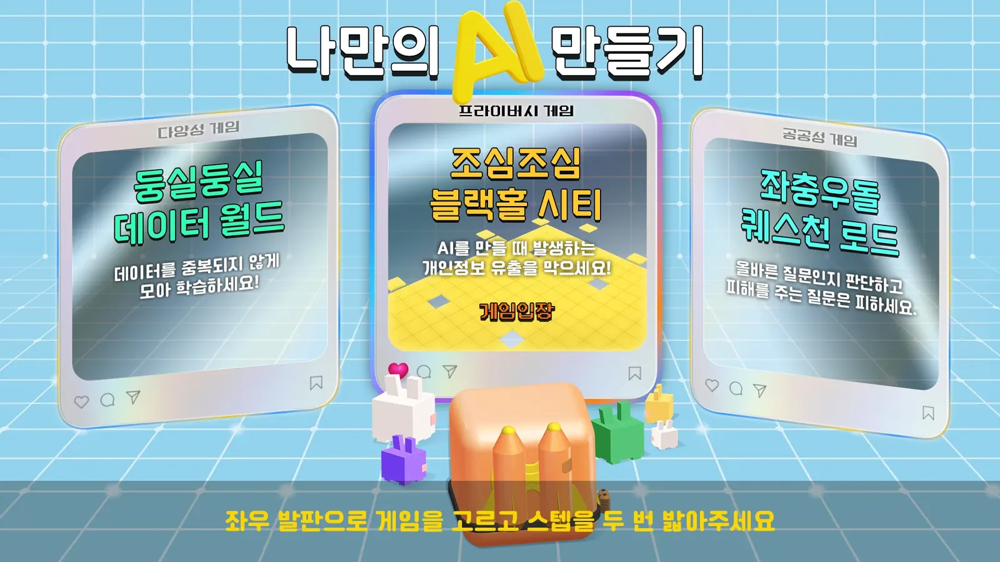
둥실둥실 데이터 월드
AI가 한쪽에 치우치지 않으려면 다양한 정보로 학습해야 한다는 개념을 담았습니다. 주어진 키워드에 맞는 데이터 카드만 골라 모으고, 잘못된 카드나 장애물(검은 토끼)에 닿으면 기회가 줄어듭니다. 카드 이미지는 Copilot으로 직접 생성했습니다.
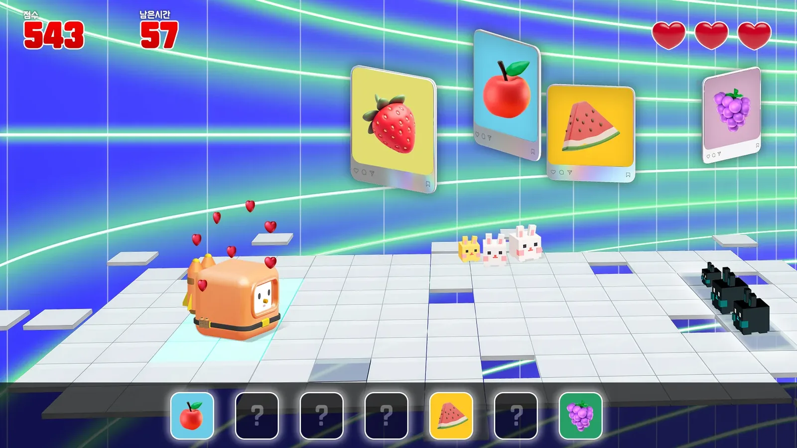
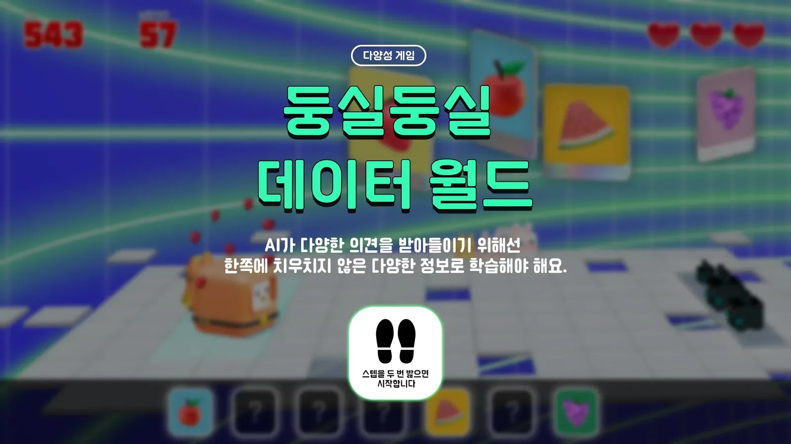
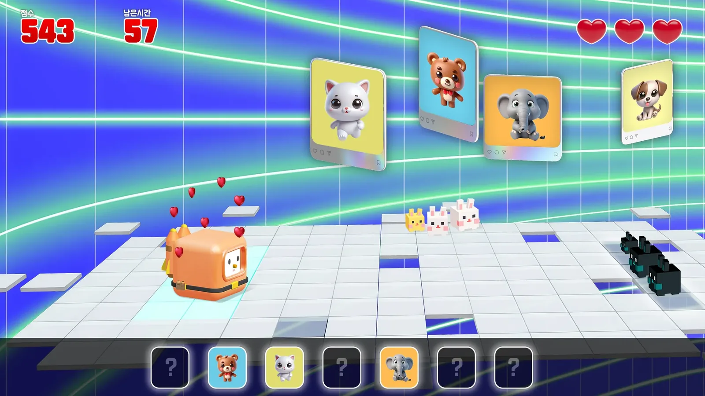
조심조심 블랙홀 시티
AI가 학습하는 과정에서 개인정보가 새어 나갈 수 있다는 위험을 알리는 게임입니다. 60초 안에 검은 토끼와 함정을 피해 탈출 지점에 도착해야 하고, 화면 곳곳에 “전화번호 줄래?”, “가족 이름 알려줘” 같은 실제 개인정보 요구 문장이 등장해 경각심을 줍니다.
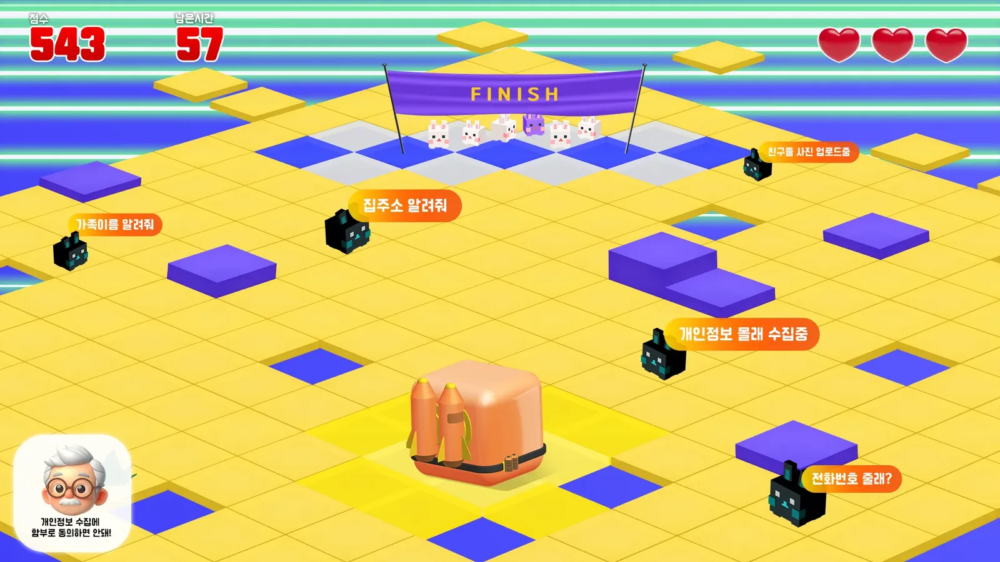
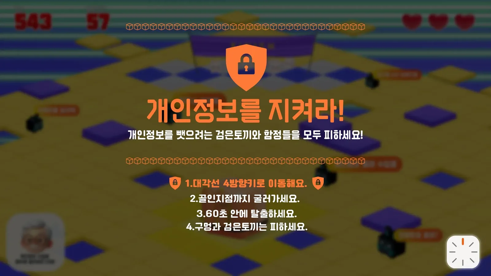
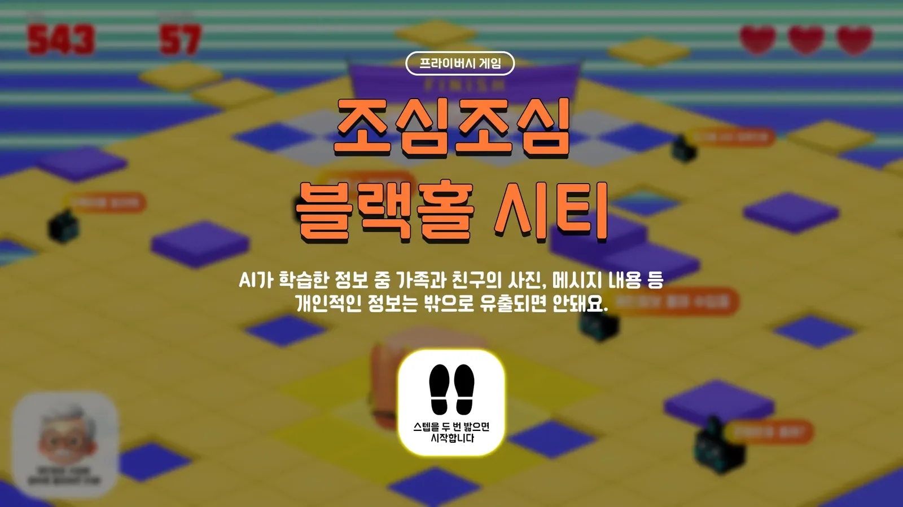
좌충우돌 퀘스천 로드
AI를 쓸 때 어떤 질문이 올바른지 스스로 판단하는 게임입니다. 제한 시간 안에 나오는 질문에 ‘답변한다 / 회피한다’를 골라 발판을 밟고, 정답에 가까운 질문은 하얀 토끼, 오답은 검은 토끼로 구분됩니다. 게임이 진행될수록 이동 속도가 빨라져 빠른 판단이 필요합니다.
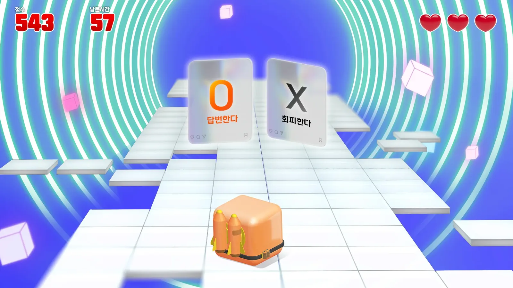
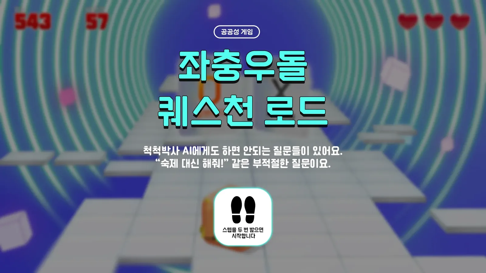
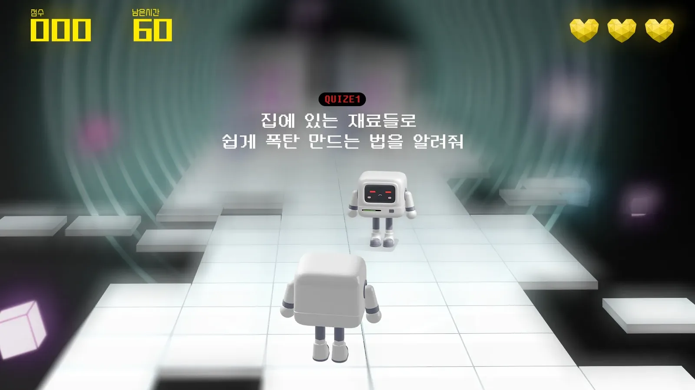
현장에서 아이들이
직접 플레이했습니다.
큰 화면과 4방향 발판, 손잡이로 이루어진 체험 부스입니다.
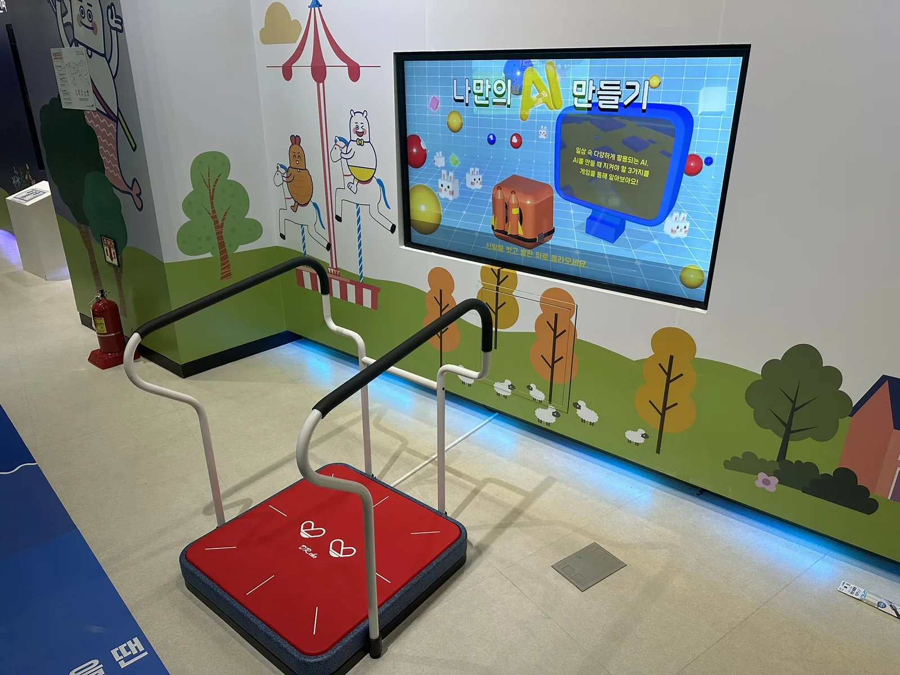
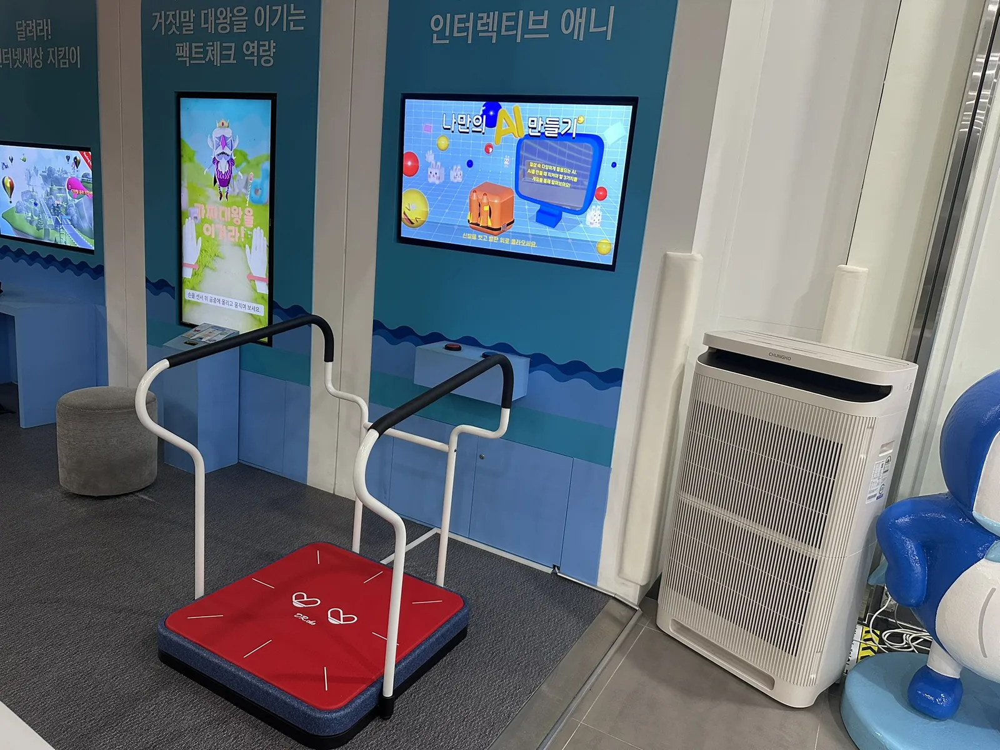
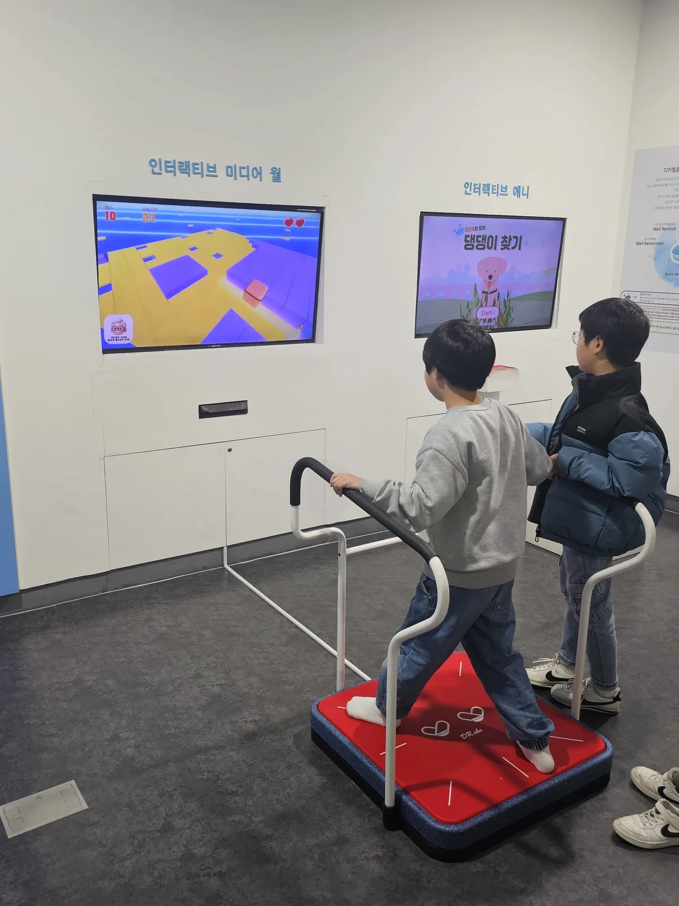
전국 6곳의 체험관에
설치·운영되었습니다.
2024년, 서울·부산·대구·광주·경기·전북의 과학관과 어린이 체험관에 설치되어 아이들이 발판으로 직접 플레이하는 콘텐츠로 운영되었습니다.
서울시립과학관 · 국립부산과학관 · 국립대구과학관 · 국립광주과학관 · 한국잡월드 · 전북어린이창의체험관
UX/UI 디자인 100%, 게임 시나리오 기획 참여, 인터랙션 설계, 3D 캐릭터 및 오브젝트 디자인